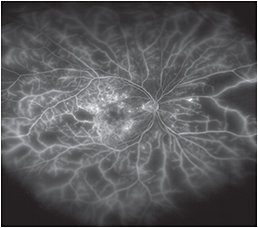
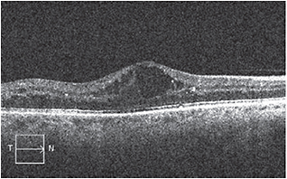

As technology expands, practices need to re-evaluate the value of using older techniques. In ophthalmology, doctors who specialize in diabetic retina care are living through such a sea change. Some continue to evaluate the significance of diabetic macular edema (DME) using fluorescein angiography, an invasive procedure, combined with color fundus photos. Others now rely solely on ocular coherence tomography (OCT). This is not an exercise in futility: DME continues to be the leading cause of vision loss among diabetic patients1 so professionals are keen to evaluate how to best image for this disease. This article reviews different approaches ophthalmic photographers take to gather images for DME.
Ultrawidefield fluorescein angiogram of a patient with diffuse DME with prolific diabetic retinopathy and extensive peripheral capillary nonperfusion and peripheral vascular leakage.
“In reality, imaging DME couldn’t be easier right now,” says Tim Bennett, CRA, OCT-C, FOPS. “OCT seems to answer the question.” Mr. Bennett, the past president of the Ophthalmic Photographer Society, says he’s observed a shift from fluorescein angiography to OCT as retina specialists rely more on the latter. However, he says, if the doctor intends to use a focal laser to treat leakage as opposed to intravitreal injections, a fluorescein angiography should be used to identify the source of the leakage.
But ultimately, when imaging for DME, doctors are concerned with the presence of fluid, says Mr. Bennett. Traditionally, retinal thickening within 500 µm of the center of the fovea would indicate clinically significant macular edema.2 To evaluate that thickening prior to the advent of OCT required multiple evaluations of the patient’s eye using an ophthalmoscope or one of the diagnostic lenses of the slit lamp. “Then, OCT came along and made it so easy,” Mr. Bennett says. That thickness today can be determined in a single session.
The convenience of OCT imaging isn’t its only benefit. “OCT is great because it gives us a cross section of the retina. We can see any defects below the layer [and] it gives us a physical thickness of the retina itself,” says John Martin, certified medical laser safety officer and ophthalmic photographer at Retinal Consultants of Arizona.
OCT imaging provides a different perspective than fundus photography, says Mr. Bennett. It offers direct cross-sectional images of ocular tissue for objective measurement and clinical evaluation in the detection of retinal diseases. An assessment of retinal morphology using OCT adds information about depth to the “en face” view observed with traditional equipment such as an ophthalmoscope or fundus camera, he says.
This preoperative SD-OCT image shows significant macular edema with cystoid fluid accumulation in a patient with background DR.
“I think, personally, optometrists should have some kind of an OCT device,” says Mr. Martin. “It’s physical documentation.” He says the push to incorporate this sort of equipment at a primary care level could help eye-care professionals see changes in thickness over a longer period of time. Although primary care physicians normally can’t diagnose DME, they may be able to recognize when the retina looks abnormal and, in that case, immediately refer the patient to an ophthalmologist or retina specialist. Mr. Martin is married to an optometrist who uses such a system. “Anytime she even questions anything, even if it’s just the slightest possibility that something is unusual, she’ll gladly refer a patient to a specialist to have them verify it,” Mr. Martin says.
Primary care offices in some European countries have been screening for retinopathy with digital non-mydriatic fundus cameras, especially in the UK, says Mr. Bennett. “Some programs here are doing that, too. It’s a matter of getting it in a primary care office and getting them to use it.” One US model is in the Department of Veteran’s Affairs, he says. In their primary care facilities, they install non-mydriatic fundus cameras and train nurses to take photos, which are then transmitted to a reading center and read by either trained readers or physicians. This telemedicine model, he suggests, could work for OCT images as well for the early diagnosis of DME, diabetic retinopathy or both.
“A lot of the doctors, at least here, and others that I know, they like the OCT because it gives them the numbers,” says Mr. Martin. “But when a diabetic patient comes in, primarily we will run the full gamut. We still use color fundus photos for physical documentation and then fluorescein angiography to see if there are any active leakages,” he says. Mr. Martin believes the fluorescein angiography’s ability to detect fluids and ischemia provides a more complete picture. Color fundus images, he says, pick up “any color pigmentations that, for some reason, don’t show up on fluorescein angiography. Because of the filters on fluorescein angiography, you can lose those details and in an OCT you don’t have that at all.
“I think some doctors still like to see a physical documentation,” provided by fundus photos and fluorescein angiography, he says. However, he senses a change in the tide. Newer doctors do not rely on fluorescein angiography as much, and might one day stop all together, he says.
One reason fluorescein angiography may lose its spot in the imaging line-up is the dye used in the procedure: Some patients, though few, are allergic to it. A patient with drug allergy history could have a higher incidence and greater severity of an adverse reaction.3
“Some doctors may still get a fluorescein angiography at the initial visit, but often they will track edema with OCT images. In years past they would have used fluorescein angiography in order to do that. So, that has certainly changed,” says Mr. Bennett. “Some physicians may still prefer to use angiography in certain cases of DME, but many seem to rely almost exclusively on OCT when treating DME with anti-VEGF medications.” OM
1. Romero-Aroca, P. Managing diabetic macular edema: The leading cause of diabetes blindness. World J Diabetes. 2011;2:98–104.
2. Mavrikakis, E. Macular Edema in Diabetes. Medscape. Oct. 13, 2014. http://emedicine.medscape.com Accessed Oct. 21, 2014.
3. Su Z, Ye P, Teng Y, et al. Adverse reaction in patients with drug allergy history after simultaneous intravenous fundus fluorescein angiography and indocyanine green angiography. J Ocul Pharmacol Ther. 2012;28:410-413.